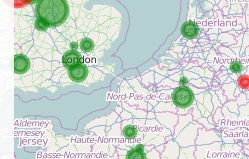

A block of spatial ideas
You will find various examples and snippets of code on this page. Feel free to use or modify any of the content on the examples.
A look at how to combine the use of GEOJSON data and WMS tile layers together using Leafletjs. Here, the data has been collected in CSV format and then converted to GEOJSON using QGIS.
One very useful feature of OpenStreetMap is the breadth of content and data associated with the various elements of its cartography- for example, road names or land parcels are often classified according to land use, road speed or historical attributes.Geofabrik in Germany actually produce a lot of OSM data extracts- here we've attempted to map certain buildings in London, UK, together with some of the BT Wifi hotspots which operate in the Area.